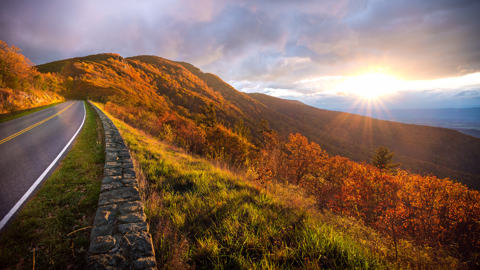
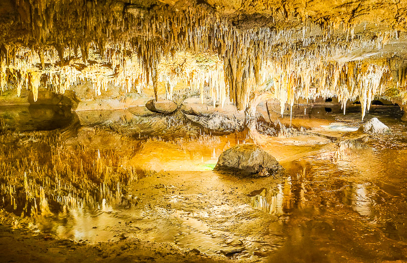
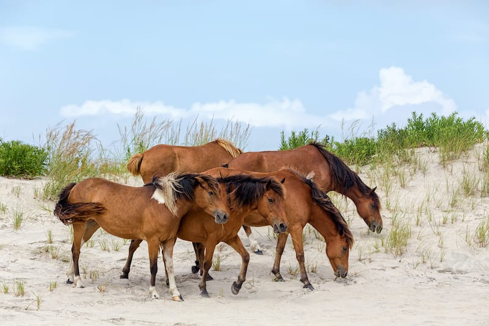

Virginia is home to a diverse selection of natural wonders, where you can go from the Atlantic Ocean to the Shenandoah Mountains in just a few hours! Virginia is also home to some of the worlds oldest explored caves and caverns. Below are just a few of the amazing sites to behold in Virginia:
1. Natural Bridge
The Natural Bridge State Park is home to one of Virginia's most iconic landmarks. It was listed as a Historic Landmark in 1988, and towers 215 feet tall. There is much more to see in the park as well, from trails to the Monacan Indian Village. For more information, click here.
2. Shenandoah National Park

Shenandoah National Park has something for nearly everyone. From dozens of trails of varying difficulties, to camp sites, to fishing, there is bound to be something you'll enjoy here. And if none of this sounds like your cup of tea, a relaxing cruise down Skyline Drive is certain to leave you in awe. For more information, click here.
3. Luray Caverns

Luray Caverns gives you a glimpse into the past with its breathtaking formations of stalagmites and stalactites that took thousands of years to form. Luray is renowned for the sheer amount of formations in the cavern as well as its size, and has been keeping visitors in amazed since its discovery in 1878. For more information, click here.
4. Chincoteague & Assateague Island

Chincoteague Island is a small town on the Eastern Shore of Virginia. An annual tradition, the wild ponies of Chincoteague & Assateague Island are rounded up to make the swim from Assateague Island to Chincoteague, where they swim across the Assateague Channel and come ashore to Chincoteague. Even if you can't make the Pony Swim, Chincoteague Island has great boating and shore attractions. For more information, click here.